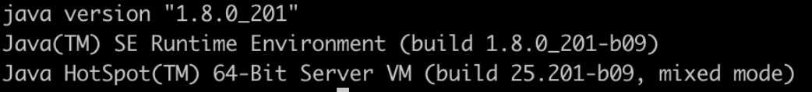

What is meant by Java is platform independent?
The statement "Java is platform-independent" refers to Java's ability to run the same compiled code on any operating system or platform without needing to be rewritten or recompiled. This characteristic is a core feature of Java, achieved through the use of the Java Virtual Machine (JVM).
How Java Achieves Platform Independence
- Java Source Code Compilation:
- Bytecode:
- Java Virtual Machine (JVM):
When you write a Java program, you write it in a human-readable form, known as source code. This source code is saved with a .java file extension. The Java compiler (javac) then compiles this source code into an intermediate form called bytecode. This bytecode is saved in a file with a .class extension.
Java bytecode is a low-level, platform-independent set of instructions designed to be executed by the JVM. Unlike machine code, which is specific to a particular processor and operating system, bytecode is not tied to any one machine or architecture.
The JVM is a software-based engine that reads and executes the Java bytecode. Each operating system or platform has its own JVM implementation (e.g., Windows, macOS, Linux), but they all understand and execute the same bytecode in the same way. This means that as long as a device or platform has a compatible JVM, it can run Java bytecode, making the program effectively platform-independent.
Write Once, Run Anywhere:
This is a common phrase used to describe Java's platform independence. You can write your Java program once, compile it to bytecode, and then run it on any platform that has a JVM—whether it's Windows, Linux, macOS, or even mobile devices like Android.
Explain what is JVM?
The JVM interprets and executes Java bytecode, making it possible to run Java programs on any device or operating system that has a compatible JVM implementation.
Overview of JVM
The JVM is an abstract computing machine that provides a runtime environment to execute Java bytecode. It is part of the Java Runtime Environment (JRE) and is responsible for converting bytecode into machine code that the host operating system's processor can execute. The JVM abstracts the underlying hardware and operating system, allowing Java programs to run on any platform without modification, as long as a compatible JVM is available.
JVM Architecture
The Java Virtual Machine consists of three components:- Class Loader Subsystem
- Runtime Data Area
- Execution Engine
- Native Method Interface (JNI)
What is Java Hotspot?
The JVM is named HotSpot because it continuously monitors the program's performance to identify hot spots—code paths that are frequently executed. These frequently executed code paths are then compiled into highly optimized native machine code to enhance execution speed.
- Java HotSpot Client VM:
- Optimized for quick startup and low memory usage.
- Ideal for client environments where fast application launch is critical.
- Tuned to reduce application startup time and minimize memory footprint.
- Java HotSpot Server VM:
- Focused on maximizing peak performance for long-running server applications.
- Prioritizes operating speed over startup time, making it suitable for server environments.
- Utilizes a different compiler optimized for high-performance execution.
- Commonality:
- Both VMs share the same Java HotSpot runtime environment but differ in their compilers.
- On 64-bit JDKs, only the Java HotSpot Server VM is supported.
Explain what is JIT?
- Just-In-Time (JIT) Compiler Overview:
- The JIT compiler is a component of the Java Virtual Machine (JVM) that improves the performance of Java applications.
- It translates Java bytecode into native machine code at runtime, enabling faster execution by eliminating the need for interpretation.
- How JIT Compiler Works:
- Initially, the JVM interprets the bytecode line by line.
- As the application runs, the JIT compiler identifies frequently executed code sections (hot spots).
- These hot spots are compiled into native machine code, which the CPU can execute directly.
- Once compiled, the native code is stored in memory for subsequent executions, speeding up performance.
- Types of JIT Compilation:
- Method-Level Compilation: The entire method is compiled into native code when it becomes hot.
- On-Stack Replacement (OSR): Allows the JVM to switch from interpreted code to compiled code within a loop, improving performance in long-running loops.
- Benefits of JIT Compilation:
- Significantly improves the execution speed of Java applications by reducing the overhead of interpretation.
- Applies runtime optimizations, such as inlining methods and eliminating dead code, to enhance performance.
- Adapts to the actual workload of the application, optimizing code paths that are most frequently used.
- JIT Compiler Optimization Techniques:
- Inlining: Frequently called methods are inserted directly into the calling code, reducing the overhead of method calls.
- Loop Unrolling: Reduces the overhead of loop control code by repeating the loop body multiple times.
- Dead Code Elimination: Removes code that will never be executed, streamlining the execution process.
- JIT Compilation vs. Interpretation:
- JIT compilation produces faster execution times than interpretation because native code runs directly on the CPU.
- Interpretation is useful for quick startup, while JIT compilation enhances performance during sustained execution.
- JIT Compiler in the Java HotSpot VM:
- The Java HotSpot VM includes both a client and a server JIT compiler, each optimized for different use cases.
- The client compiler focuses on reducing startup time, while the server compiler emphasizes peak performance.